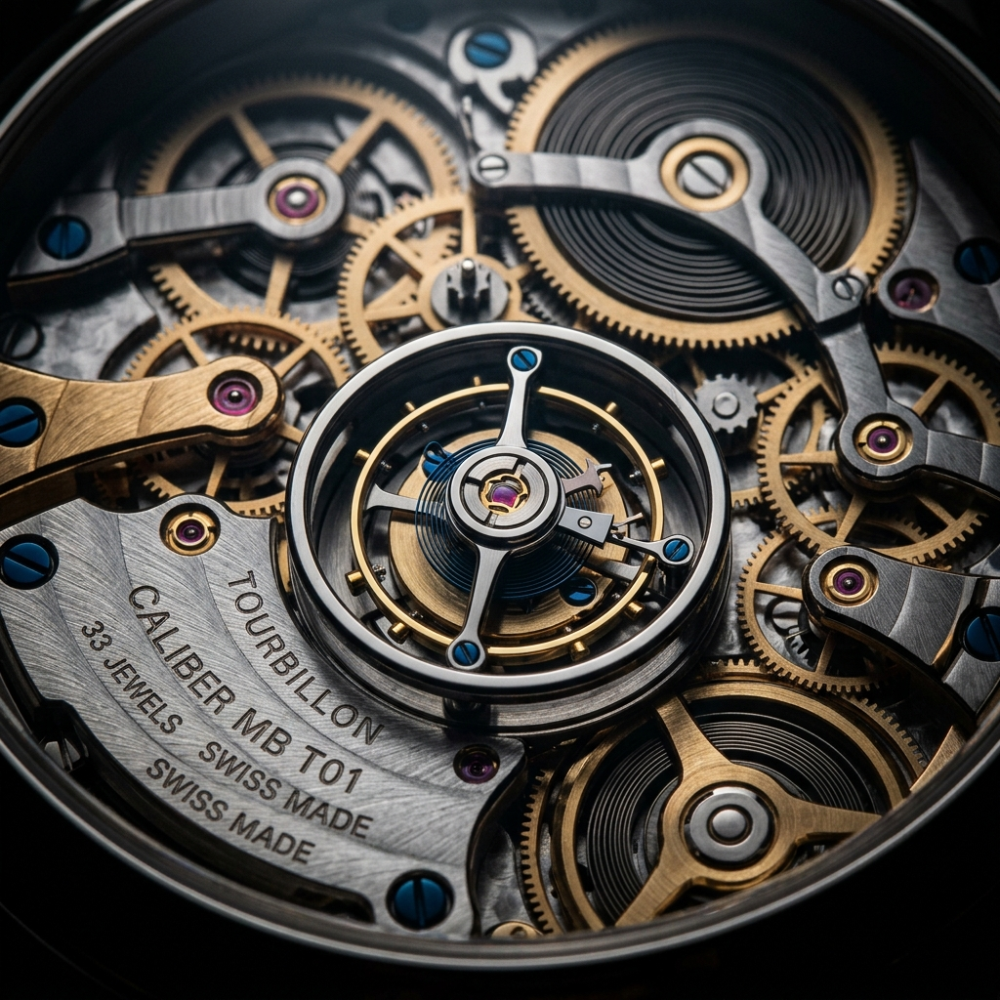
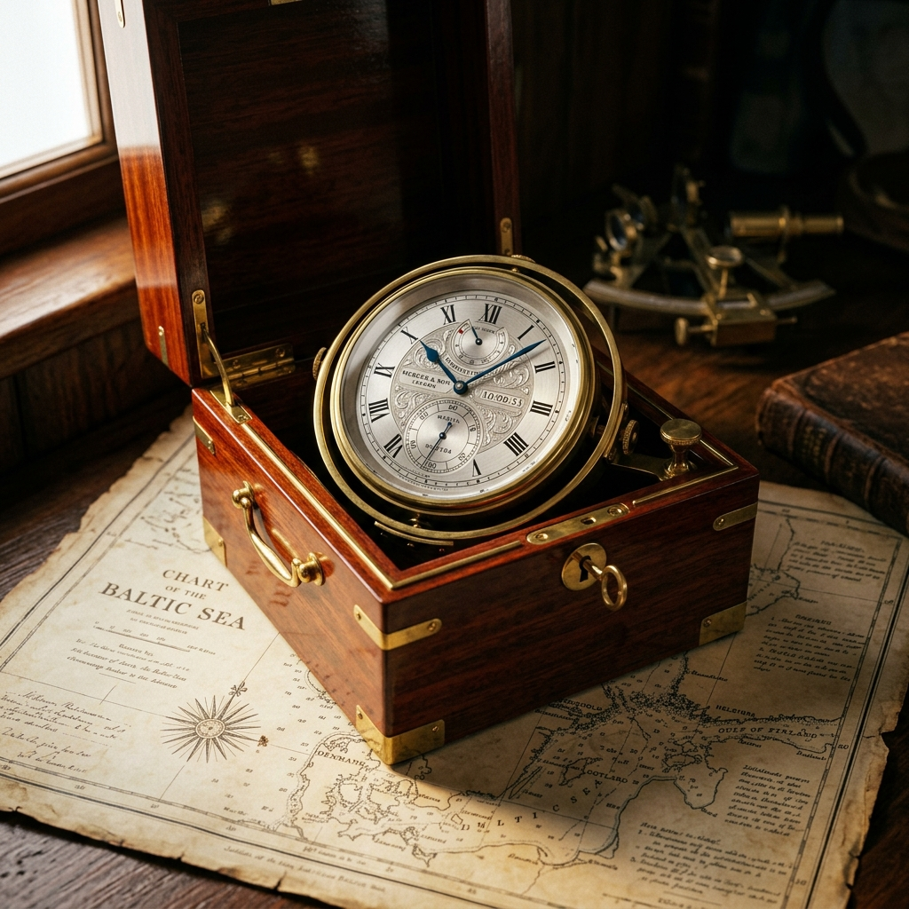

Origin
Born December 24, 1991. Kołobrzeg—a Baltic port city in northwestern Poland. His father, a seaman, spent months on the open water. Four generations of watchmakers preceded him. Nobody taught him the craft.
1991Fifth generation. Self-taught.
Born December 24, 1991. Kołobrzeg—a Baltic port city in northwestern Poland. His father, a seaman, spent months on the open water. Four generations of watchmakers preceded him. Nobody taught him the craft.
1991BSc Technical Physics, Gdańsk University of Technology. PhD in Physical Sciences—research on thin layers of organic luminescent materials. Winner of the Polish government Diamond Grant. Published in JCR scientific journals.
2014—2021Two weeks of formal training at the Polish Watchmakers Association workshop. Everything else: self-taught from books, AHCI mentorship, and ten thousand hours of solitary practice. The physicist became a horologist.
2017—2018First place, F.P.Journe Young Talent Competition. Prize: CHF 20,000 and an invitation to exhibit alongside the masters. The jury: François-Paul Journe himself. The piece: a pocket watch with tourbillon, 200+ components, entirely by hand.
2022Candidate member, Académie Horlogère des Créateurs Indépendants. The youngest Polish member in history. He now exhibits alongside Vianney Halter, Kari Voutilainen, and the legends of independent horology.
2023—One watch. One thousand hours. Every component machined, finished, and assembled by one pair of hands. No CNC. No assistants. No shortcuts. Independence is not a brand position. It is a physical constraint.
∞
His father spent months at sea. The marine chronometer Maciej built is a love letter to a childhood spent watching ships disappear over the horizon—a tool of navigation reimagined through five generations of craft.

Independence means freedom. In the case of watchmaking, freedom for me means being able to produce every part at my own workshop.Maciej Miśnik — Qlekta, 2023